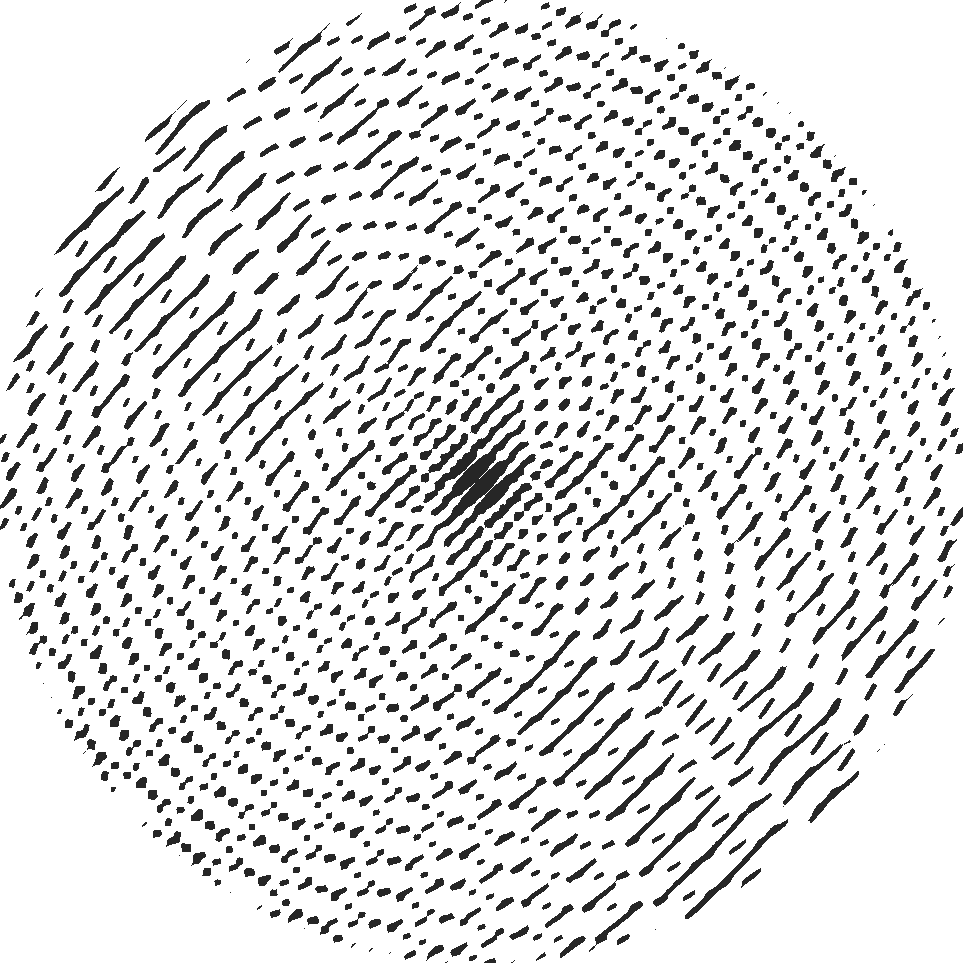

MOMENTIUM
1347
The year the ships arrived.
No warning, only rats.
Whole villages gone silent
in less than a season.
They called it pestilence,
but some whispered:
the earth was cleansing itself.
1666
The fire began in a bakery.
Or so the records claim.
By the fourth day,
London was more ash than city.
Witnesses reported a sound,
not of crackling timber,
but of voices chanting in the smoke.
1848
Gold was found in California.
Men rushed west,
chasing fortune with blind eyes.
Few mention the dreams—
miners spoke of tunnels
leading to nowhere,
walls that whispered their names.
1919

A wave of molasses
tore through Boston.
Thick, dark,
suffocating in its sweetness.
The newspapers laughed.
But some survivors swore
they saw shapes swimming
inside the flood,
smiling.
1969
On the surface of the moon,
they planted a flag.
Millions watched,
breathless.
The cameras cut away
just long enough
for one astronaut to murmur:
“They are already here.”
1999
Everyone feared the clocks.
@lasgunz